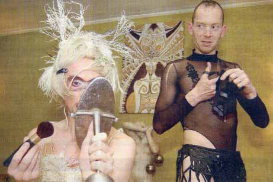

|
||
| Bøssernes store sommerparade mangler sponsorer | ||
 Dennis Agerblad (tv), Miss Fish (th) Foto: Daniel Leone |
||
|
Kunstnergruppen dunst forbereder showet til årets Mermaid Pride. "Det er virkeligt ærgeligt, at sponsorer ikke tør støtte os," siger Miss Fish. |
||
|
Print denne side |